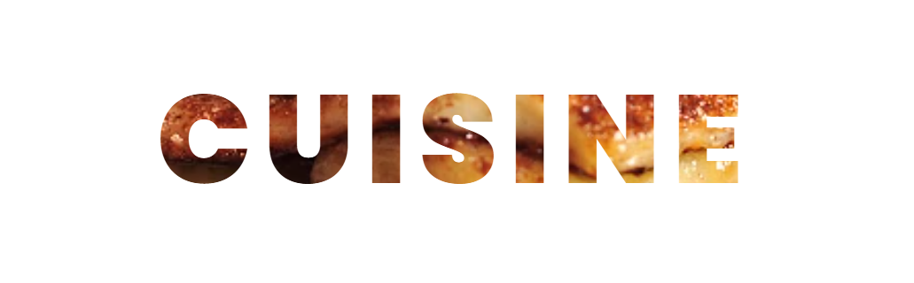

Informações do Projeto
Desenvolvido por: Samuel Santos
Projeto focado em demonstrar a beleza e cultura da Austrália utilizando tecnologias modernas.
Copyright @ 2026 - Volta ao Mundo

Presente em estádios e padarias, a torta de carne é um símbolo nacional com variações de queijo a carne de canguru!
Inspirado no clássico britânico, servido fresquinho nas praias com peixes como barramundi local.
Mais que uma refeição, o "barbie" é um evento social com salsichas e frutos do mar ao ar livre.
Um patê salgado de levedura, amado pelos locais. Um gosto adquirido, mas essencialmente australiano!
Cubos de bolo de baunilha cobertos com chocolate e coco ralado, um doce tradicional em cafés.
Sobremesa de merengue leve e crocante com frutas frescas, motivo de orgulho nacional.
Com uma costa rica, a Austrália brilha com camarões e lagostas. Mercados em Sydney e Perth são paradas obrigatórias.
Um mosaico multicultural: da herança britânica à forte presença asiática e mediterrânea em cada prato.
Potência mundial em vinhos como os de Barossa Valley e famosa por suas vibrantes cervejas artesanais nos pubs aussies.
Desenvolvido por: Samuel Santos
Projeto focado em demonstrar a beleza e cultura da Austrália utilizando tecnologias modernas.